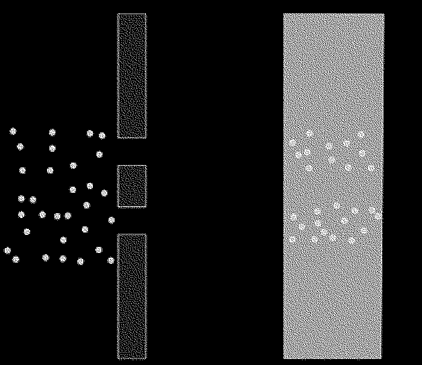
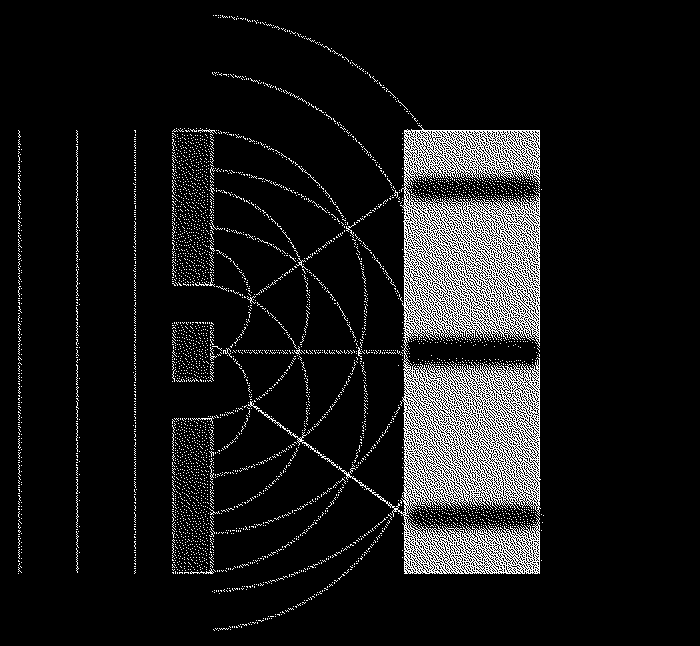

Before Christianity there was paganism. During and after the Middle Ages, the term paganism was applied to any unfamiliar religion. Paganism seems to be a collection of various similar looking “religions” which are based on nature. There are still communities today in Africa or even Eastern Europe that you could call pagan.
What is interesting about these religions is that they are very similar yet completely different, the specific rituals observed differ from region to region but almost all of them seem to have a few key elements that come back. Things like dancing, rhythmic music, masks, natural elements and materials, a close relationship with nature, initiations and sacrifices.
Roman paganism however seemed to have focused mostly on deities and paying your respects to them, not because you “feel” but because if you don’t then something unfortunate would happen to you or your family; they had deities
for roads, skies, the sun, the moon etc. Christianity offers a very different concept, because it does not matter what you do because “God” would still love you and if you repent your sins then you will have a place in heaven. I can understand how this concept gained popularity since the alternative only offers fear if you do not participate.
Christianity issued that there is only one god and that your faith and sacrifice has to come from within, as opposed to sacrificing animals and idolizing statues. To battle the evil with the good within yourself, which emotions are bad and which are good, to love each other and live a proper life and be rewarded with eternal life in heaven. There is a strong basis of Christian values in Western civilization’s approach to emotions today that many are not aware of because human or animal sacrifice, for
instance, was not a strange concept in pagan practices, it is in fact
because of Christianity that Western civilization is a lot less barbaric than it used to be.
However i do believe there are many pagan practices of great value which were later disregarded by Christianity as heresies and therefore leading to the persecution of pagans. Maybe not Roman pagans, but pagans in general had a much closer relationship to nature and interestingly enough in the Bible there is mention of god to be found in nature so i personally believe there have been many translation mistakes in how to interpret the Bible in the course of time.
Just imagine if you are a “superhuman” being and you have to explain to rather simple peasants what we nowadays understand about the scientifically measurable vibrations of emotions and how you can actually choose to have a particular emotion by simple visualization exercises - I can imagine that it would be difficult to explain such concepts if all you understand is several deities that will punish you if you are not paying your respects. However, the big mistake I believe Christianity made in throughout history is to completely expel all pagan practices, because they did not understand that many pagan practices actually contribute to the message that Christianity is trying to teach.
Christianity also gained popularity because Jesus was a healer.
Jesus was strangely enough not the only healer alive in those days, so the idea that he could heal people was not so strange to the establishment; what made him different was that he was just a carpenter.1 It seems that Jesus lived a rather normal life and then he went traveling and found a sect in the mountains that had some ideas about the end of the world as we can see in the Dead Sea scrolls and combined these ideas when he travelled back. However early Christianity seemed to have been not that bad of an idea. We can see in Quantum mechanics, through the double slit experiment, that it is the observer itself that influences whether a photon behaves as a wave or a particle that there might be a field (called the zero point field) where subatomic particles behave very differently then from what we know atoms, electrons and neutrons to behave like. The double slit experiment
demonstrates that little particles of matter have something of a wave about them, and suggests that the very act of observing a particle has a dramatic effect on its behavior.
The double slit experiment goes as follows, imagine a wall with two slits in it. Imagine throwing tennis balls at that wall. Some will bounce off the wall, but some will travel through the slits. If there is another wall behind the first, the tennis balls that have travelled through the slits will hit it, so imagine that the tennis balls are wet with ink. The ink will mark all the spots where a ball has hit the second wall and you would expect to see two strips of marking roughly the same shape as where the slits are. In the image below, the first wall is shown from the top, and the second wall is shown from the front.

Now imagine shining a light at a wall with two slits. As the wave passes though both slits, it splits into two new waves, each spreading out from one of the slits. These two waves then interfere with each other like water ripples. Where the ripples overlap will be the brightest of light and at other points the ripples cancel each other out and you end up with a stripe pattern. If you throw a tennis ball it will go through one of the slits and not end up as a wave pattern, however on the quantum level this is not the same. Imagine firing electrons at this wall with the two slits, but block one of those slits off for the moment. You will find that some of the electrons will pass through the open slit and strike the second wall just as tennis balls would. When you open the second slit you would expect two rectangular strips on the second wall, as with the covered with ink tennis balls, but what you actually see is very different, the spots where electrons hit eventually appear as a
wave pattern.

You might think that the electrons interfere with each other, however even when you fire the electrons one by one there is still a wave pattern that comes out of it.Because they saw the wave pattern they decided to put a detector by the slits to see which slit an electron goes through and the strange thing about this is that the pattern then changed in to a pattern that you would see when you throw tennisballs through two slits.
Somehow, the very act of observation changed the behaviour of the electrons. They concluded that there is a field of possibility before matter takes a final form and the act of looking changes this. This field of possibility is called the
zero point field.
So to think that there is a sort of “net” that underlies the very fabric of reality that transcends concepts like space and time and translate that to a graspable idea of “god” is not that far off. What (Roman) paganism1 was missing however was the intention of the self, here is where faith in Christianity comes in. In order to believe that “God” will save you and fill you with love, you need to have faith that he will, while in fact you are doing that yourself by believing in it.
What Quantum mechanics shows is that the act of observing is making matter take a form - which means that matter is in flux. I can see how Jesus gained popularity because he gave people something nonmaterial
, something what you can create with your mind, because you can create happiness and love and peace within yourself if you had faith and faith is really nothing more then believing in something as if it is there before you had any proof, which in the laws of Quantum mechanics actually works as manifesting by observing.
The act of observing is making matter take a form, that means that matter is not fixed as it is so we as humans have influence on this field, we as humans can create what is not there before, so to believe that the spirit of Christ will fill your heart with love is in fact you yourself creating it by believing.
Modern day business videos on youtube have a similar practice where you visualize what you want to achieve. There was even a study
done where professional basketball players were put in two groups where one group visualized their training and another group actually trained and in the end the results were similar to each other. A doctor called Joe Dispenza claimed he cured his own spine with meditation and basically mentally operating himself from the inside. Given these modern day examples, the idea of inviting the spirit of Christ by believing in him is not so far removed from secular society as we might think.
The Roman empire, that eventually eliminated all pagan practices
, was not a very religious based enterprise, it was more an army based enterprise and whatever religions were around they would accept as long as they pray for the army. In the beginning of Christianity, christians were persecuted, a few centuries later Constantine legalized both religions and a few centuries later pagans were persecuted. Because of this transition period a lot of pagan rituals are actually within Christianity. For starters Jesus was not born on 25 December and Santa Klaus is based on the Norse Krampus and Christmas is based on Saturnalia which was a pagan festival which covered roughly the fourth week of December. The Roman god Saturn celebrated by the festival was the god of the harvest, and Saturnalia was about conspicuous consumption of food and drink. During its celebration no prisoners were executed, and some were granted release.
Masters served their slaves at table during one point of the festival, and a slave was elected to serve as the King of the celebrations. Public feasts were held, and gifts were exchanged, some of them to public associates as jokes, while gifts given privately to family and friends were often of a more substantive nature. If you have ever seen Disney’s “The Hunchback of Notre Dame” in the scene where Quasimodo was held up in a chair? That is saturnalia. Even the swaying with the thurible is not a real christian ritual, the romans combined all sorts of rituals to make everybody satisfied, while centuries later they fell in line under one religion for
political reasons.
Christianity split up in a few sections
like Orthodox in 1053 and protestant in 1517 mostly because they did not agree with the direction the catholics were taking. Martin Luther pointed out the corruption of the church and what is not supposed to be in the religion, the concept of purgatory is not mentioned in the original scriptures for instance and has been invented by catholics to probably enforce power over people. The loss in the christian faith has only increased in the last centuries mostly because of this corruption and the allegations of sexual misconduct by the priests. The whole idea that there is a man in the sky that will punish you if you are gay or use curse words does not seem to appeal to people anymore. I want to argue that years of changing the very essence of Christianity has completely obstructed what it meant to teach us in the first place. This resulted in people moving away from established religion and lean more towards a new-age concept
of spirituality.
New-age spirituality seems to consist of concepts like the law of attraction,
visualization, visualization based meditation or self-hypnosis, yoga, crystals and self help books. The law of attraction consists of the idea that whatever you feel you will attract and that this is the reason why prayer does not work because you ask it from a place of need rather than a place of having it already. The idea is that like attracts like so when you would feel abundant you would attract abundant people and therefor maybe becomes actually abundant by an opportunity that presents itself.
Visualization is an exercise where you visualize the life you want to have in detail for instance or you visualize your project finalized and getting praise and that this emotional state will attract this future outcome to you. Self-hypnosis is a guided meditation where you travel in a storytelling type way to your childhood for instance and use symbols or representations of painful concepts to eradicate these traumas from your psyche. Crystals are stones that seems to carry a certain wavelength of energy and self help books speaks for itself.
Initially there does not seem to be something wrong with this movement, it acts as if it is without religion and based in quantum mechanics, so science, but science is really nothing more then what you can see or measure with your own eyes, so what you can prove that works. In Catholicism we saw power, money, followers (mostly out of fear), concepts stolen from other areas and a piece of truth that does actually work.
In today’s new-age movement we see a similar pattern
emerge. The platform or format that is “stolen” originates from business, the visual language is from the business world because of how the conferences look like. Take for instance Tony Robbins, you pay 5000 Dollar for a ticket to attend a conference that really does not carry that much real information. The amount of the ticket price also comes back to money. Self-help books are expensive and often they reference each other so you keep buying them and reading them but never actually doing something. Followers are usually people that are looking for something to give their lives meaning, they come out of fear to these conferences because of the fear of missing out or being stuck in the life they have build for themselves and want out and then we have the small piece of truth, similar to the double slit experiment in quantum mechanics.
It seems like the same structure the catholics used to gain money and power over people. What do you do when you want to join the game of money and power? You become a priest. What do you do now if you want money and power? You write a self-help book. Meditation does seem to be a proven way to help with many ailments. What I find difficult about most meditation techniques and versions you can find within the realm of new age spirituality is that none of them are like the original teachings of the Buddha. This is exactly what happened to Christianity, it changed so much over the years that only a small fraction of the actual message is left and therefore creating new culprits.
To illustrate my point there was a research done by Anouk Visser and Roos Vonk
about spiritual superiority among this group of nowadays spiritual leaders and guru’s and in their abstract you can find that ”Spiritual Superiority scores were consistently higher among energetically trained participants than mindfulness trainees and were associated with supernatural overconfidence and self-ascribed spiritual guidance. It was correlated with self-esteem and, more strongly, with communal narcissism, corroborating the notion of spiritual narcissism. Our results illustrate that the self- enhancement motive is powerful and deeply ingrained so that it can hijack methods intended to transcend the ego and, instead, adopt them to its own service.”
This is exactly what went wrong in New Age spiritual movements of today, because you don’t work on the ego if the work itself becomes the ego, which is what seemed to have happened in the self help New Age spirituality movement because then you “are” a writer of a self help meditation book.